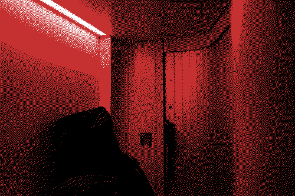

Konec roku, svátky a nutnost vybrat si zbytky dovolené nabízí příležitost k reflexi.
Co bylo v prosinci pěkné:
Pár dní ve Florencii na workshopu na EUI. Člověku dojde, že akademický život nemusí být jen grind, ale též to může být milé. Obzvlášť pokud se nacházíte v renesanční vile ze 16. století, na univerzitě, která má peníze, takže si můžete nacpávat pupík dobrým jídlem. Moje dlouhodobé přesvědčení je, že vědecká obec by měla nepodmíněně přijmout komparativní výhodu jednotlivých států: ať nakladatelství klidně zůstanou v anglicky mluvících zemích, ale všechna setkání by měla být v zemích, kde umějí vařit. Konference v Anglii a Irsku nikomu chybět nebudou.
Stejně jako Jaroslav Rudiš musím poděkovat rakouským drahám za jejich noční vlaky:
“Jako každý železniční člověk mám radost, že světla nočních vlaků září v jízdních řádech střední Evropy zase jasněji. Za to musím poděkovat ÖBB ve Vídni. Noční vlaky, které mnohé jiné státní dráhy vyřadily z provozu, Rakušané zachránili a vracejí tyto hotely na kolech zpátky na koleje. (Rudiš: Návod k použití železnice)”
Btw. v mini kabinách v nočních vlacích lze měnit barvu osvícení. Můžete třeba zářit stejnou barvou jako noční podniky.

Několik (2) lidí se mně ptalo, jestli by letět nebylo levnější/rychlejší. Bylo. Ale nemyslím si, že cílem cestování je dostat se někam co nejrychleji/nejlevněji. Optimize for joy! (Pro ten účel jsem si pořídil Interrail. Teď mám 3-9 měsíců na vymyšlení, kam jet)
Na Vánoce bylo v mém domovském městě trochu sněhu.
Během prosince jsem +- dobouchal čiko, můj bespoke RSS/newsletter agregátor. Díky pozornému čtenáři jsem zjistil, že pro každý substack existuje RSS feed. Doufám, že ve substacku nejsou kokoti a nezatrhnou tipec stejně jako Spotify zatrhlo přístup k API, kvůli čemuž je fully automated playlist o něco horší.
Každopádně jsem nečekal, že mi někdo poradí. Proto přikládám seznam věcí, u kterých bych ocenil pomoc:
V prosinci jsem přečetl knihy, kromě Rudiše i River East, River West:
“You shouldn’t smoke in bed,” she said. “It could catch fire. That’s what happened to my dad’s comrade. He fell asleep and burned to a crisp.”
“Your dad’s comrades always perish in educational examples.” (Aube Rey Lescure: River East, River West)
A nového Zaklínače (Rozdroże kruków). S tím souvisí můj poslední hot take pro rok 2024: Tolkienova fantasy je imperiální: v jeho světě existují ctnostné a barbarské rasy, ty první musí zvítězit nad druhými.
Sapkowského fantasy je jiná, relevatnější pro dnešní svět. V ní jsou lidé v mocenských pozicích obvykle hajzlové, kteří mj. nechávají zavraždit svoje manželky, aby je mohly nahradit mladšími. Monstra jsou výsledkem lidského chování (kvůli kletbám jako strygy, bestiální chování ne-lidských bytostí způsobují lidé, když ohrožují jejich potomstvo).
Sapkowski se též ústy kněžek Melitele vysmívá lidem snažících se omezit přístup k potratům, což je vždy milé vidět:
“Wiem, o co im szło. Też o prawo. Takie, że pomoc medyczna udzielana niewiastom jest z prawem sprzeczna i karalna. Wymyślili to, rzecz jasna, mężczyźni. Ha, gdyby to oni zachodzili w ciążę, zabieg terminacji byłby ogłoszony świętym misterium i odbywałby się on przy modłach, kadzidłach i chóralnych śpiewach.” (Sapkowski: Rozdroże kruków)
Čtení tohoto článku na Hearing things a konkrétně následujícícho odstavce mě přimělo k reflexi, co jsem poslouchal v uplynulém roce.
“It’s not the platform that matters, it’s the act of recommending music and owning one’s taste. I believe most people who publicize their Spotify Wrapped feel this way, it’s just that the app automatically does the work of creating animations that are begging to be shared. Of crunching the numbers so that one doesn’t have to do the work of reflecting on their favorite songs and albums of the past 11 months. I wanna know everyone’s taste too—I just think it’s worth taking a few minutes to jot down an unranked list in the Notes app, or gather up album covers and write a thoughtful IG caption, or share pictures of the records you’ve bought and loved this year, or hell, even make your own playlist. It’s not gonna look super slick or make you feel like you’re participating in the cultural meme of the week, but I guarantee it will feel more meaningful to you, and anyone else who finds it.”
Můj playlist sestavený z tracků, na kterém jsem tu odkazoval je tady + pár věcí jako bonus.
Za zaznamenáníhodné počiny kromě toho patří také:
Ze seznamu knih (přečtených od května, kdy jsem ztratil heslo na goodreads a rozhodl se, že to tak zůstane) stojí imho za pozornost:
Z non-fikce nejspíš:
Seznam by byl delší, kdyby non-fikce byla psaná stejně dobře jako píše Peter Bednár. Obdobně: z akademických paperů nestojí za zmínku ani jeden, protože jsou všechny kokotsky napsané. lol. (na první dobrou mi v hlavně uvízla jen tahle metastudie o regulaci nájmů)
Na perfektní výslovnost v angličtině nedosáhnu, ale tento song mi vnuknul myšlenku, že naučit se a mluvit se skotským přízvukem by bylo dost zábavné - Andrew Wasylyk: Be the Hammer
Díky věci agregující články z internetu umožňující ukládat si výpisky z četby, mám uložené následující bangery:
“Dealing with rejection is a core competency for everyone who works in public policy” (Rachel Coldicutt)
a
Kurt Vonnegut and fellow writer Joseph Heller (author of Catch-22) were at a lavish party hosted by a billionaire on Shelter Island. Vonnegut teased Heller, noting that their host likely made more money in a single day than Heller had earned from his wildly successful novel over its entire lifetime. Heller responded:
“Yes, but I have something he will never have."
Vonnegut asked, “What?"
Heller replied, “The knowledge that I’ve got enough." (zdroj)
Ať máte v roce 2025 dost.